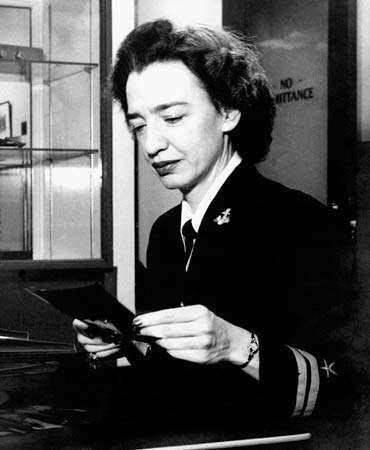
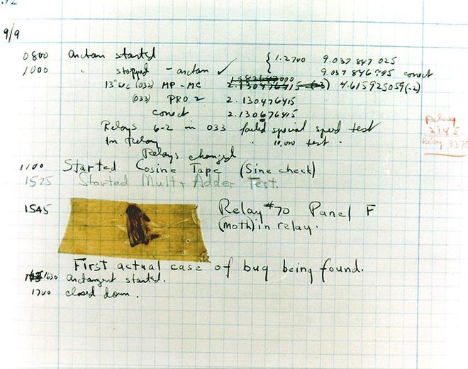
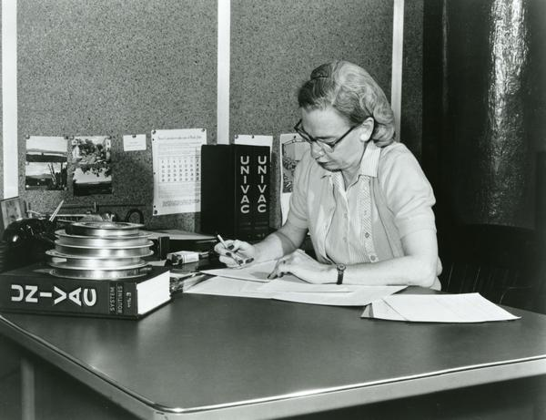
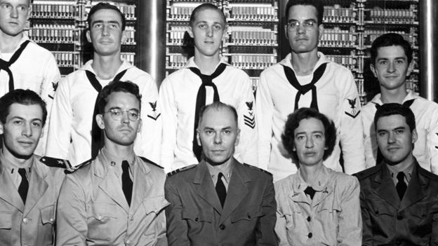
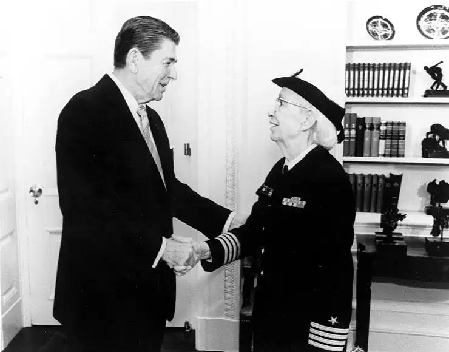
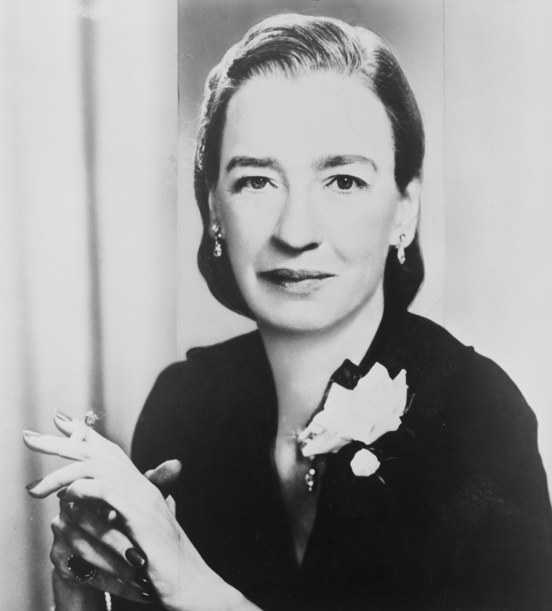
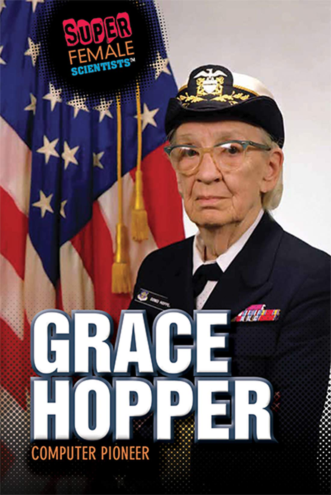

GRACE HOPPER
Grace Hopper foi uma das primeiras mulheres a trabalhar no campo da tecnologia e suas contribuições inovadoras abriram caminho para muitos avanços futuros no campo.

Quem foi Grace Hopper?
Grace Hopper foi professora, matemática, cientista da computação e Almirante da Marinha dos Estados Unidos. Nascida em 9 de dezembro de 1906 na cidade de Nova York, Grace Brewster Murray era a mais velha de três irmãos. Seu pai Walter Fletcher Murray Walter era corretor de seguros, e sua mãe Mary Campbell Van possuía um amor pela matemática que foi passado para Grace. Ambos acreditavam que suas duas filhas deveriam ter uma educação da mesma qualidade que seu filho.
Grace era uma criança fascinada por máquinas e muito curiosa. Quando tinha sete anos, ela desmontou seu despertador para descobrir como ele funcionava. Como não conseguiu remontá-lo, ela desmontou mais sete relógios de sua casa, até sua mãe descobrir o que estava acontecendo e a limitou a usar apenas um relógio. Desde criança, Hopper tinha um grande interesse por matemática e ciência, o que a levou a se tornar uma das cientistas mais importantes do século XX.
Ela se formou em matemática e física pela Universidade de Yale em 1930 e obteve um mestrado em matemática pela mesma universidade em 1934. Depois de lecionar matemática no Vassar College por um curto período, ela ingressou na Marinha dos Estados Unidos em 1943 e foi comissionada como tenente júnior em 1944. Ela foi designada para trabalhar no Laboratório de Computação de Harvard, onde ajudou a desenvolver o primeiro compilador de linguagem de programação, chamado A-0.

Grace Hopper e a tecnologia
Hopper é amplamente reconhecida por suas contribuições para o campo da computação e da programação. Ela ajudou a desenvolver o primeiro compilador de linguagem de programação de alto nível, chamado COBOL, que se tornou uma das linguagens de programação mais amplamente usadas no mundo dos negócios e ainda é usado hoje em dia. Hopper também desenvolveu o primeiro compilador de linguagem de programação de nível intermediário, chamado B-0, que ajudou a tornar a programação mais acessível e abriu caminho para o desenvolvimento de linguagens de programação de alto nível.
Outra contribuição importante de Hopper foi a criação do conceito de depuração (debugging), que se tornou uma parte essencial do desenvolvimento de software. Segundo a lenda, Hopper cunhou o termo depois que encontrou um inseto preso em um relé do computador Harvard Mark II, que impediu o funcionamento do sistema. Ela removeu o inseto e o anexou ao seu diário de laboratório, dando início à tradição de se "depurar" um programa.

UNIVAC I e MARK II
O UNIVAC I e o Mark II foram dois dos primeiros computadores eletrônicos da história, e Grace Hopper desempenhou um papel fundamental no desenvolvimento de ambos.
O UNIVAC I foi desenvolvido pela empresa americana de tecnologia, Remington Rand, em 1951. Ele foi o primeiro computador a ser vendido comercialmente e foi usado principalmente pelo governo dos Estados Unidos para fins militares e científicos. O UNIVAC I era uma máquina gigante, com o tamanho de uma sala e pesando cerca de 13 toneladas. Ele tinha uma capacidade de armazenamento de 1.000 palavras, que eram armazenadas em tubos de vácuo.

Grace Hopper foi uma das principais responsáveis pelo desenvolvimento do software para o UNIVAC I. Ela trabalhou no projeto como parte de sua equipe no Laboratório de Computação de Harvard. Ela desenvolveu o primeiro compilador de linguagem de programação de nível intermediário, chamado B-0, que ajudou a tornar a programação mais acessível e abriu caminho para o desenvolvimento de linguagens de programação de alto nível, como o COBOL.
A importância do UNIVAC I na história da computação é inestimável. Ele foi o primeiro computador eletrônico de grande escala a ser comercializado, e foi amplamente utilizado por governos, empresas e organizações de pesquisa em todo o mundo. O UNIVAC I ajudou a estabelecer a computação como uma ferramenta fundamental para resolver problemas complexos e realizar cálculos avançados.

Além disso, o trabalho de Hopper no desenvolvimento do UNIVAC I e de linguagens de programação de alto nível teve um impacto duradouro no campo da computação. Ela foi uma das primeiras pessoas a reconhecer a importância de tornar a programação mais acessível e fácil de usar, e sua contribuição para o desenvolvimento de linguagens de programação mais intuitivas e eficientes ajudou a democratizar o acesso à tecnologia da computação e a abrir caminho para muitos avanços futuros no campo.
O Mark II, por sua vez, foi desenvolvido durante a Segunda Guerra Mundial e foi usado principalmente para fins militares. Ele era um dos maiores computadores da época, com o tamanho de uma casa e pesando cerca de 5 toneladas. Hopper foi uma das principais programadoras do Mark II e ajudou a desenvolver a linguagem de programação de nível intermediário, B-0, que foi usada para programar o computador.

Além disso, durante seu trabalho no Mark II, Hopper também desenvolveu a primeira ferramenta de depuração de software, que permitiu que os programadores identificassem e corrigissem erros em seus programas de forma mais eficiente. Essa ferramenta foi uma contribuição significativa para o campo da programação de computadores e continua sendo usada hoje em dia.
A contribuição de Grace Hopper para o desenvolvimento do UNIVAC I e do Mark II foi fundamental para o avanço da tecnologia da computação e ajudou a abrir caminho para a era digital em que vivemos hoje.

COBOL
COBOL (Common Business-Oriented Language) foi criada por Hopper em resposta à necessidade de uma linguagem de programação que pudesse ser usada em sistemas de negócios e contabilidade.
Antes da criação do COBOL, a programação de computadores era feita em linguagem de máquina ou em linguagens de programação de baixo nível, o que tornava o processo muito difícil e demorado. Com COBOL, os programadores poderiam escrever códigos de programação em inglês simples e entendível, em vez de ter que escrever em linguagem de máquina.

A criação do COBOL revolucionou o campo da programação de computadores, tornando a programação mais fácil e acessível para pessoas que não eram especialistas em computação. Isso permitiu que os negócios e governos pudessem processar grandes quantidades de dados de maneira mais eficiente e em um tempo muito menor.
COBOL se tornou uma linguagem de programação muito popular e foi amplamente utilizada nas décadas seguintes, especialmente na área de processamento de dados de negócios. Até hoje, COBOL ainda é usado em alguns sistemas de computador legados em todo o mundo.

A contribuição de Grace Hopper com a criação do COBOL foi um marco na história da programação de computadores e abriu caminho para outras linguagens de programação de alto nível, como o FORTRAN e o BASIC. Hopper continuou trabalhando no desenvolvimento de novas linguagens de programação e contribuindo para a evolução da tecnologia da computação até o fim de sua vida.
Carreira Militar
Grace Hopper teve uma carreira notável na Marinha dos Estados Unidos, servindo como oficial durante a Segunda Guerra Mundial e continuando a trabalhar como reservista até o final de sua vida. Seu envolvimento com a Marinha começou em 1943, quando ela se alistou na Reserva Naval dos Estados Unidos.
Durante a guerra, Hopper foi designada para trabalhar no projeto Harvard Mark I, um dos primeiros computadores elétricos do mundo. Ela foi encarregada de programar a máquina para realizar cálculos de trajetórias de artilharia. Sua experiência no Mark I a levou a se envolver ainda mais no desenvolvimento de computadores.

Após a guerra, Hopper continuou a trabalhar para a Marinha, tornando-se a primeira diretora do Departamento de Programação Automática da Marinha. Ela também ajudou a desenvolver o primeiro compilador, um programa que traduz linguagens de programação de alto nível para código de máquina, tornando a programação muito mais fácil e eficiente.
Hopper serviu na reserva naval até sua aposentadoria em 1986, alcançando a patente de contra-almirante. Ela foi uma forte defensora do recrutamento de mulheres na Marinha e da igualdade de oportunidades para todos os militares. Durante seus anos de serviço, Hopper foi homenageada com inúmeros prêmios e honras, incluindo a Medalha Presidencial da Liberdade e a Medalha Nacional de Tecnologia.

Sua carreira militar foi marcada por sua dedicação ao serviço, inovação e trabalho árduo. Hopper foi uma das primeiras mulheres a servir na Marinha dos Estados Unidos e ajudou a moldar a história da tecnologia militar e civil do país.

Curiosidades
Grace Hopper foi uma pessoa fascinante e cheia de curiosidades interessantes. Aqui estão algumas delas:
- Ela tinha um apelido muito incomum: "Amazing Grace". Isso ocorreu devido à sua notável carreira e realizações em sua vida profissional.
- Hopper acreditava em compartilhar seu conhecimento e era conhecida por ser uma mentora dedicada a jovens programadores. Ela estabeleceu um programa chamado "Hopper's Pirates", que ajudou a ensinar programação de computadores para crianças.
- Hopper também era conhecida por ser uma pessoa muito enérgica. Ela era famosa por andar com um relógio de bolso em forma de bússola que usava para ilustrar como um nanossegundo (uma bilionésima de segundo) era importante no tempo de processamento de um computador.
- Hopper acreditava em inovação e mudança. Ela disse: "A maneira mais perigosa de fazer as coisas é continuar fazendo as coisas da mesma maneira. A maneira de fazer as coisas melhor é manter a mente aberta".
- Hopper recebeu inúmeros prêmios e honras durante sua vida, incluindo a Medalha Nacional de Tecnologia, a maior honra concedida pelo governo dos Estados Unidos para realizações na área de tecnologia.
- Ela também foi postumamente homenageada com o nome do navio USS Hopper (DDG-70), um dos navios mais avançados e poderosos da Marinha dos Estados Unidos.

Essas são apenas algumas das muitas curiosidades interessantes sobre a vida de Grace Hopper. Ela foi uma pioneira na programação de computadores e uma mulher excepcional que inspirou muitos em sua vida e continuará inspirando gerações futuras.
Hopper também foi uma forte defensora do uso de computadores para fins educacionais e trabalhou incansavelmente para tornar a tecnologia mais acessível a todos. Ela foi uma das primeiras pessoas a reconhecer o potencial da tecnologia de rede e foi fundamental na criação dos primeiros padrões de programação de computadores, que ainda são usados hoje.

O legado de Grace Hopper continua a inspirar e influenciar a tecnologia e a computação hoje. Sua dedicação à inovação, ao pensamento criativo e ao avanço da tecnologia a tornam uma figura importante e admirada na história da computação.
A contribuição de Hopper para a programação e a computação em geral é inestimável. Ela abriu caminho para a criação de linguagens de programação mais intuitivas e menos complexas, o que permitiu que mais pessoas se tornassem programadoras e impulsionou o desenvolvimento da computação como a conhecemos hoje.
Quiz
Você já conhece a história incrível de Grace Hopper, uma das maiores pioneiras da tecnologia que revolucionou o mundo da computação e da programação? Agora é hora de testar seus conhecimentos sobre sua vida e suas contribuições em um quiz especial que preparamos para você! Descubra curiosidades e fatos interessantes sobre a vida de Grace Hopper e ajude a divulgar o legado dessa mulher incrível.
Clique no botão abaixo e comece agora mesmo!
de
Referências
Foi utilizado a tecnologia do chat gpt para me auxiliar na elaboração dos textos sobre Grace Hopper e os seguites sites:
- Grace Hopper: quem foi a matemática que revolucionou a programação
- Grace Hopper: Ouse e Faça
- Grace Hopper, a mulher que tornou a linguagem do computador mais humana
- Mulheres Históricas: conheça a história de Grace Hopper, a "vovó do COBOL"